RTR: Imperium Surrectum
RTR: Imperium SurrectumBoii, Insubres and Volcae
2022-09-27 · Rex Basiliscus

Hello, everyone!
We're counting the days until the 0.5.0 release, which will be this Friday, 30th of September. It's been a couple of days now since the last Dev Diary, but we still have some things to show you!
In this short DD, let me show you the last 3 of the 18 new factions coming with the patch release: the Boii, the Insubres, and the Volcae!
*Faction descriptions and research provided by @Genava55*

Boii
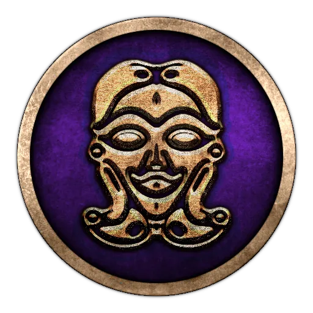
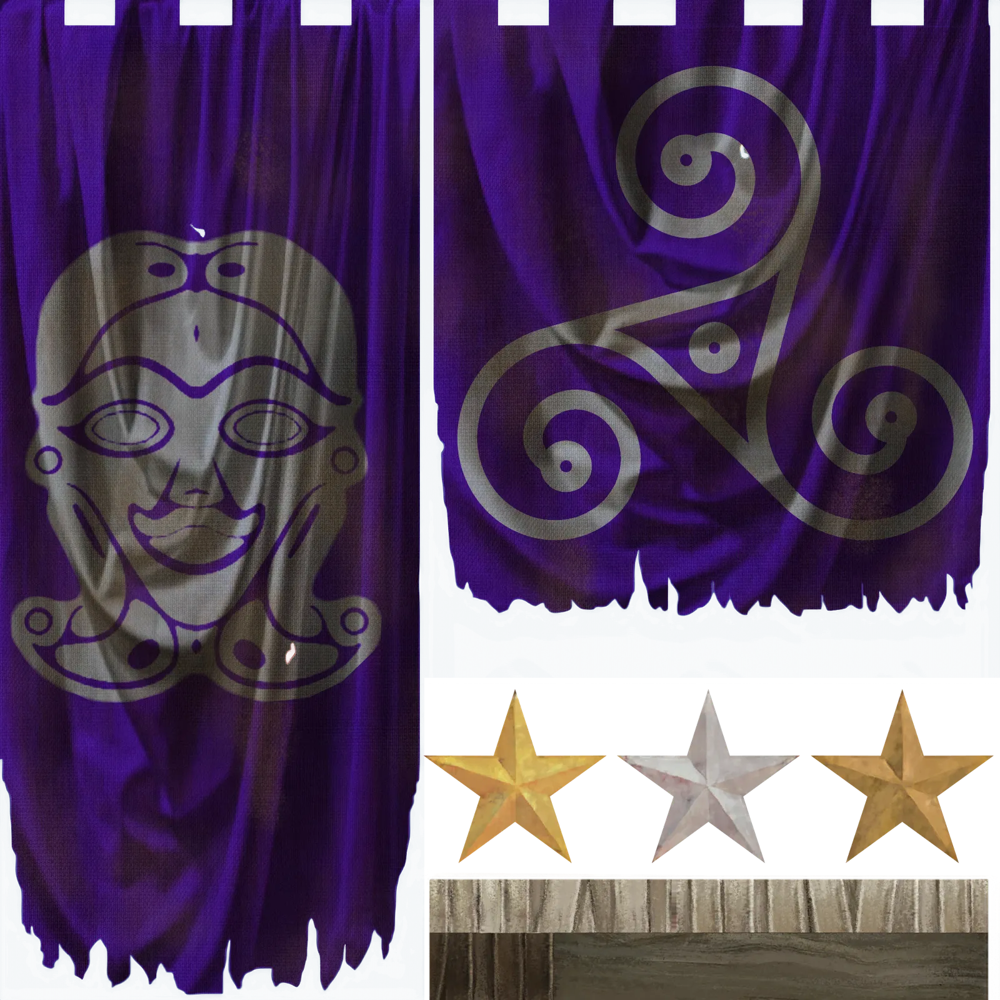
*The armies advance at speed, and a mighty noise spreads over the field when all the riders raise their horses' heads high with the bridle and then urge them forward; rearing aloft, the chargers then rush on and in their stormy flight over the plain leave hardly a trace of their hoof-prints on the dusty surface. A swift squadron of Boii, commanded by Crixus, takes the lead, dashing against the front rank of Romans, and blocking the way with their giant bodies. Crixus himself, proud of his ancestry, claimed descent from Brennus, and the taking of the Capitol was one of his titles to fame. He displayed on his shield the Gauls weighing the gold on the sacred eminence of the Tarpeian hill. A golden collar glittered on his snow-white neck; his garments were striped with gold, with gold his gauntlets were stiff, and his helmet-crest sparkled with the same metal.* – Silius Italicus, *Punica*, IV
The skies are dark, and the omens foretell the return of the furrows of blood. Our people are threatened. Our allies, the Senones, are defeated and have been driven from their lands. Rome wants to expel all the Gauls from Italy and to colonise their lands. They think they are in a strong position, but they know nothing about our people! They know that we crossed the Alps a long time ago, but they do not know that our people still exist in our original homeland. In the midst of the Hercynian Forest that frightens them so much, our brethren have flourished. In Italy we are but a fertile branch that has crossed the highest peaks, the darkest valleys, the black forests of the north; overcoming many peoples and hunting monstrous beasts in the process, just to come here and prosper.
In the north, our brothers conquered the great forest and built a rich and powerful kingdom. Across the Albis [Elbe] and the Istrus [Danube], they linked the North with the East. Located in the middle of the Hercynian Forest, they are the obligatory crossing points for all merchants.
Even the amber from the Baltic passes through their hands. By allying ourselves with the Insubrians, we even managed to send much coveted products from Italy across the Alps. This grand trading network bought us the friendship of many powerful nations, like the fierce Tauriscans from the eastern Alps.
Rome will have to understand that we will not be exterminated or driven out of these lands easily. Rome blames us for humiliating her in the past, but it was her citizens who murdered a messenger during a diplomatic meeting! Unlike these barbarians, we have never practised extermination in Italy. Our people settled among the Etruscans and Umbrians, as we still live among them today. That is why we have kept the friendship of the Etruscans and Umbrians despite past wars. The insolence of the Romans must stop. This time, the sword will not be thrown on a scale, but on their faces!
Our warriors will be joined by our brothers from the north who daily face the monstrous beasts, animal or human, that live near the Albis [Elbe]. Our cavalry will be reinforced by our experienced allies who defeated Illyrians and Greeks alike in the Balkans. Our war chariots will roll over the bones of the insolent, our javelins will pierce their flesh and our swords will cut off their heads! They will make fine trophies in our sanctuary!
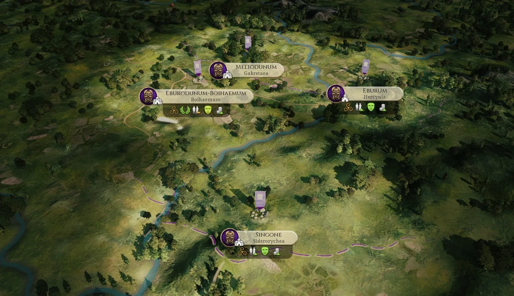
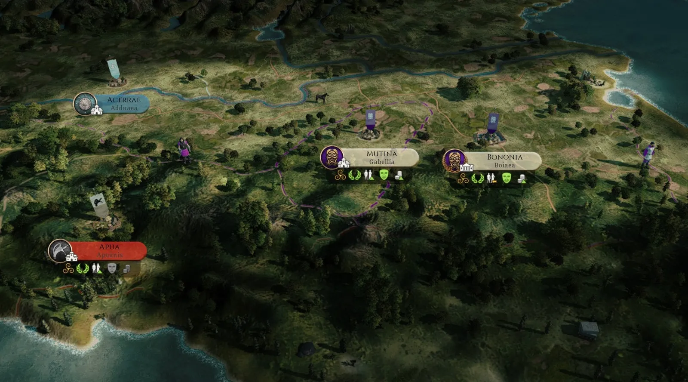

Insubres
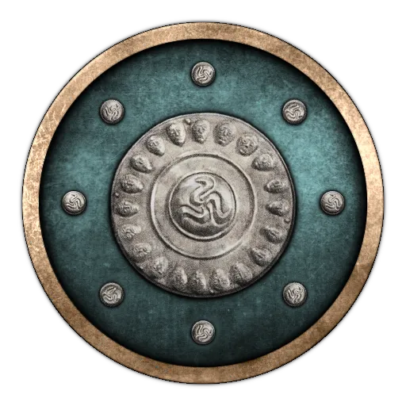
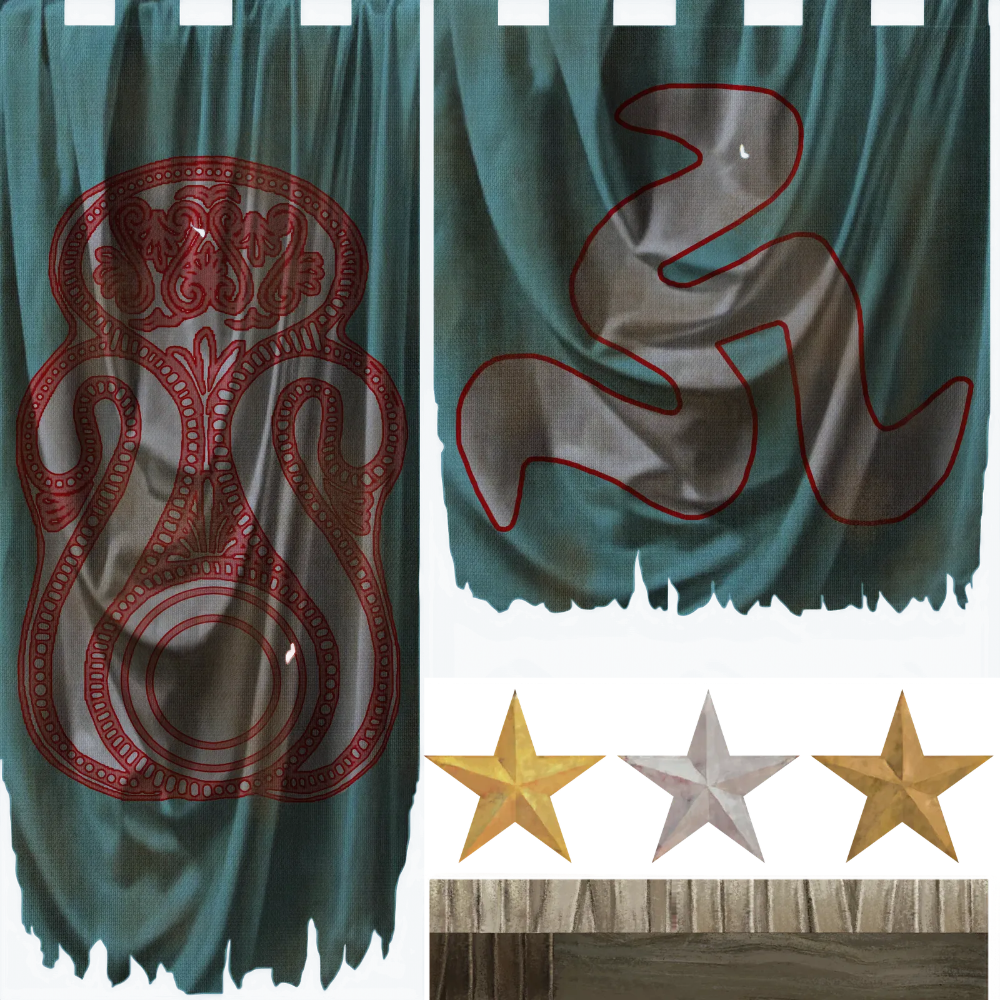
*The Romans, however, […] were terrified by the fine order of the Celtic host and the dreadful din, for there were innumerable horn-blowers and trumpeters, and, as the whole army were shouting their war-cries at the same time, there was such a tumult of sound that it seemed that not only the trumpets and the soldiers but all the country round had got a voice and caught up the cry.* – Polybios, *Histories*, 2.29.5-6
We are the Insubres, proud lords of the plains in the middle of which we established our great town of Mediolanon, where we keep the sacred icons of our state. Blessed with an abundance of wine, all kinds of grain, and the finest wool; our lands on this side of the great Alps are a source of envy for many. If not for the sharpness of our swords, we might soon have lost that wonderful source of our famed generosity. Even though we are a simple and content people, we will not hesitate to strike hard and fast against those who oppose us!
Our people were part of the first generations of Celts who crossed the Alps. We have witnessed the rise and fall of many peoples as the ages passed by. We have seen Rome when it stood under the yoke of the Etruscans and we have seen the same Etruscans fall under the weight of their pride. We build cities to trade and protect our merchants, but we are also besiegers and plunderers when someone makes the mistake of threatening us or our allies.
Did our forefathers not sack Rome itself, plundering its riches and driving away its so-called proud citizens as wretched slaves? Is it not true that only because of their facing us and our brethren, Boii and Senones; having become accustomed to being cut up by our swords; they could neither undergo nor expect any more terrible experience, and therefore finally become somewhat sufficiently trained in war to face the perfidious invader Pyrrhos in the South?
Today, Rome stirs once more.
Will her legions march north, uniting our foes against us? Will they turn the courage that we taught them when they faced our fathers against us?
Stand fast, men, sharpen your swords and prepare for war. Watch out for our treacherous neighbours, the fickle Cenomani and Veneti, for even if they share our blood, they are weak and not to be trusted … Set aside the best of animals, order the druids to prepare a round of sacrifices to placate the gods. Send out our envoys to the Boii and Gaesatae, evoke their lust for riches and plunder to be won!
War is nigh, and will arrive ever sooner for those who do not prepare to face it. Therefore, ready your blades, and prepare to fight! For we have burned Rome in the past, and burn it shall once again when we, Insubres, rise in valor and strength!
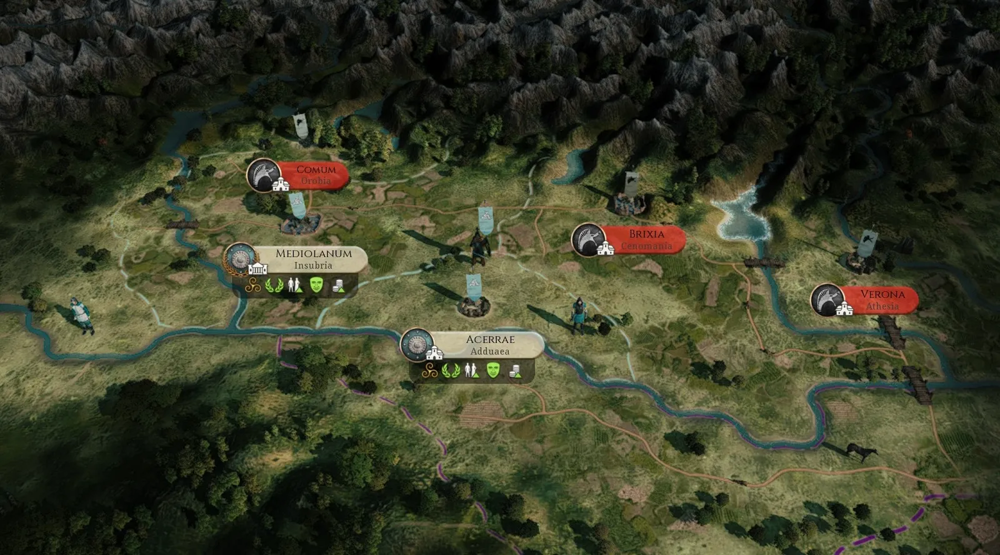
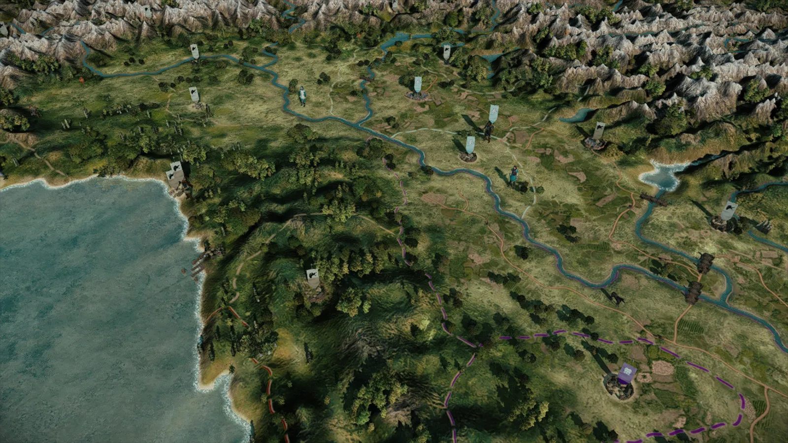

Volcae
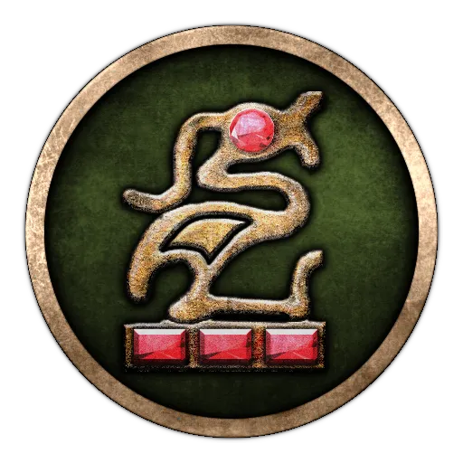
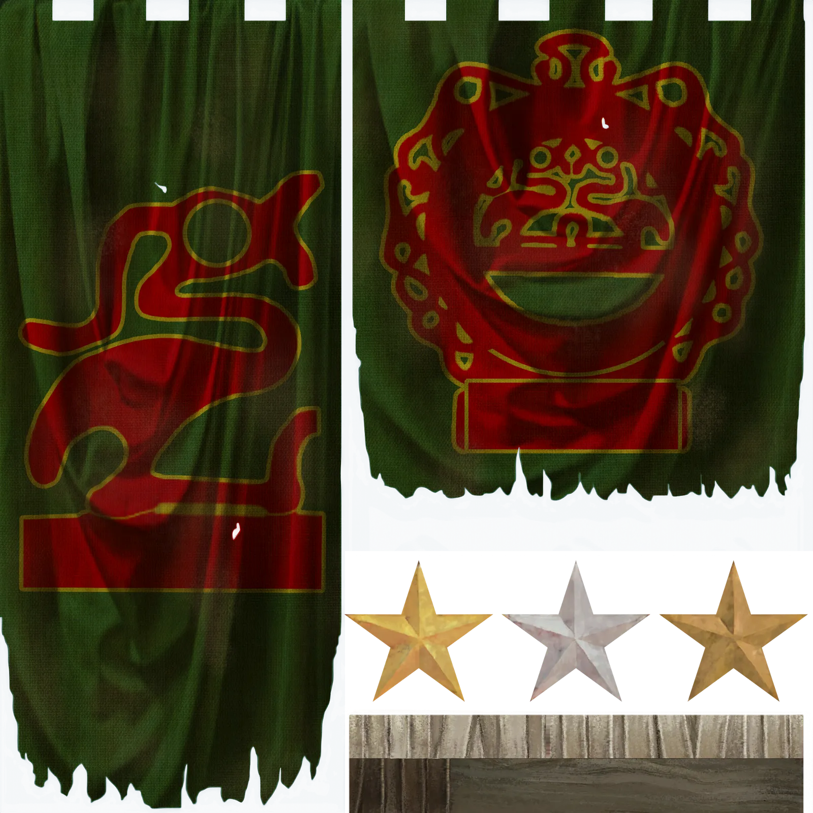
*Now there was a time in the past when the Gauls were superior in valour to the Germans and made aggressive war upon them, and because of the number of their people and the lack of land they sent colonies across the Rhine. And thus the most fertile places of Germany round the Hercynian forest were seized by the Volcae Tectosages, who settled there, and the nation maintains itself to this day in these settlements, and enjoys the highest reputation for justice and for success in war.* – Caesar, *Bellum Gallicum*, 6.24
Suavelos, noble one! You are brave to have crossed this dark forest, few men of your kind come to visit us. We, too, are not native to this land, hailing from southern Gaul but having left its mild climate for a more austere one. To tell you the truth, we had no choice, Gaul was overpopulated and power was held by a small minority. We were mainly landless aristocrats, second or third sons of nobles with little hope of inheriting the family estate. Many of us kept ourselves busy by plundering our neighbours or by joining warrior brotherhoods to fight as mercenaries or auxiliaries. The situation had become dramatic when no one needed mercenaries anymore, and when neighbours started to defend themselves more effectively.
A warrior cannot remain passive, he needs action. It is unthinkable to have lived an idle life, it is an affront that the gods do not tolerate. This is how wars between tribes turned into wars between clans, how theft and murder became common within the tribe. Of course, the ruling nobility decided to react and came up with a rather simple answer: drive us out. This has happened several times in the past, expelling young people to solve a social crisis is a common method. At the time, all of Gaul was going through a similar crisis and we decided to join the big movements towards Greece.
Part of our group went to the East, while we stayed with our leader, Bolgios, who decided to cross the Alps and continue travelling up North.
Our leader Bolgios is talented and wise, a man worthy of songs and poems. Thanks to him we have defeated several Illyrian kings and even a Greek king! Many people reproached him for not going on to plunder the Greek cities and settle in their homes. But he seems to have had the right instinct, considering the fate of our comrade Brennos. It is said that some of our brothers are living in Asia at present and that they are living a turbulent life among the Greeks. Part of me would envy them if we did not have more profitable business to attend to here ourselves.
Here, beyond the Hercynian Forest and the Rhine, we hunt! A lot. From early age we learn to track and kill all kinds of animals and in this forest, there is no shortage of choice. All the animals are unusually big compared to Gaul, especially the bulls. When we get tired of the animals, we hunt our neighbours, expand our pastures and explore other areas where our descendants can settle. Here, despite the harsh climate, we easily find space for our cattle. We have more than enough to honour the gods every winter and summer. Despite the distance, we manage to trade with our Vindelician neighbours to the south. Iron, glass, adornments, we manage to haggle a profit out of all sorts of things. Our wares are most popular, in spite of our bellicose temperament, everybody wants to do business with us!
What a pleasure it is to sell at high price a commodity that we will get back next summer by sword!

And that's all for today's Dev Diary!
We have now showcased all 18 of the new factions coming with the new patch, but just to remind everyone, let me list all of them:
Aedui :aedui: Allobroges :allobroges: Ardiaei :ardiaei: Atropatene :atropatene: Belgae :belgae: Bithynia :bithynia: Boii :boii: Cappadocia :cappadocia: Chatti :chatti: Cimbri :cimbri: Edetani :edetani: Insubres :insubres: Lugii :lugii: Lusitani :lusitani: Masaesyli :masaesyli: Scordisci :scordisci: Tylis :tylis: Volcae :volcae:
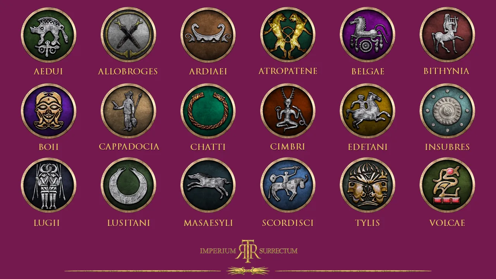
Let us know what you think in a channel!
Till next time ...